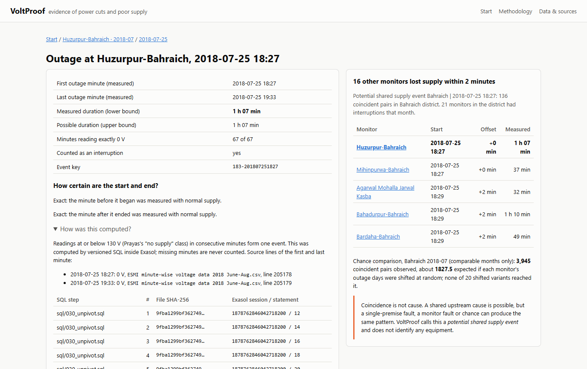

ExaThon India 2026 · Track 3
Traceable evidence of power cuts and poor supply, from minute-by-minute voltage records, analysed inside Exasol.
Data: Prayas (Energy Group), Electricity Supply Monitoring Initiative (ESMI), Harvard Dataverse doi:10.7910/DVN/CLLZZM (CC0 1.0).
github.com/stredevirad/voltproof-exathon-2026
The problem
Illustrative A shopkeeper in a small Uttar Pradesh town loses business to evening cuts but cannot show when, how long, or whether neighbours lost supply too.
Prayas's own article reports "in excess of 4 hours (>240 minutes) a day" for rural areas; our measurement is higher (see validation).
Sources: docs/HEADLINE_FIGURES.md; Prayas, "ESMI in Uttar Pradesh", 7 Aug 2019.
Who it helps
A dated PDF per location-month: every interruption, its certainty and bounds, and a pointer to the grievance route.
Reproducible, versioned SQL over the raw files; data defects found and documented instead of silently dropped.
Every number traces to a source file line and an Exasol statement id, so a reviewer can verify it rather than trust it.
VoltProof is an evidence-analysis aid. It does not state what anyone is owed, does not name a cause, and is not legal advice.
Demo moment · Bahraich, 25 July 2018, 18:27

Coincidence is not cause.
How it works
Why Exasol · measured on a 15.6 GB laptop
| Scale fix (recorded in Exasol's audit log) | Before | After |
|---|---|---|
| Run detection: LAG + running SUM → one ROW_NUMBER window | 665 s, 7.4 GiB temp | TODO-BENCH-RUNS |
| Duplicates: minute-level GROUP BY → hour-level first | 1,892 s + cancelled | TODO-BENCH-CLEAN |
| Chance baseline: band join → bucketed equality joins | 348 s (sample only) | TODO-BENCH-BASELINE |
Every statement's session and statement id is matched to EXA_DBA_AUDIT_SQL (199 of 199), and the same audit statistics produce these benchmarks. Sources: docs/BENCHMARKS.md, docs/WHY_EXASOL.md.
Correctness evidence
docs/VALIDATION.md §1 · docs/TEST_REPORT.md
Validation against Prayas's published figures
| Prayas figure | Prayas | VoltProof | |
|---|---|---|---|
| Single-monitor profiles, 2017–2018 (4 monitors, 34 monitor-months) | hours/day per class | largest difference 0.2 h/day | agrees |
| Evening outage (Figure 9), min: megacity / other municipal / rural | 12 / 53 / 144 | 11.3 / 47.8 / 147.3 | agrees |
| Outage by time of day (Figure 8), summed, min/day | ≈ 56 / ≈ 155 / ≈ 523 | 56 / 174 / 555 | agrees |
| Daily outage (Figure 2), min/day | 21 / 87 / 260 | 55.6 / 174.4 / 555.2 | higher |
Our daily-outage averages are higher than Prayas's Figure 2; Prayas's Figure 2 and Figures 8–9 imply different averages, and the article does not state the averaging used for Figure 2. No parameter was tuned to close the gap.
docs/VALIDATION.md §3 (primary definition: comparable months, 2016-01 to 2019-06, pooled).
Data defects found in the published files
In 2016–2018, 11–17% of read location-hours are entirely 0 V; in 2019, 4.3%. 82% of 2019 gaps have 0 V just before and after. Found by comparing with Prayas's own single-monitor charts.
Handled: gaps stay missing data; 2019 figures are labelled lower bounds in the app and reports; headlines use 2016–2018.
690,915 of 695,974 rows say hour 0, so minute timestamps cannot be determined. Loaded, verified, excluded with that reason.
Dates M/D/YYYY (earlier DD-MM-YYYY), detected per file; names with an added " [Offline]", matched only when unambiguous.
Limits and legal framing
In Uttar Pradesh, the Commission's regulations under Section 42(5)–(8) of the Electricity Act, 2003 provide a Consumer Grievance Redressal Forum (s. 42(5)) and an Electricity Ombudsman (s. 42(6)).
UPERC CGRF and Ombudsman Regulations, 2003; PIB, Ministry of Power, 30 Dec 2010. The Electricity (Rights of Consumers) Rules, 2020 (PIB, 21 Dec 2020) postdate the data and are not applied to it.
Future scope (not claimed today)
New plug-in monitors or smart-meter interval data through the same versioned SQL steps.
Each state's rules, encoded from the primary regulation, to show which events may warrant review through the grievance forum.
The ESMI files cover many states; a map needs coordinates the source does not have.
Team
With thanks to Prayas (Energy Group) and the ESMI volunteers who collected and published these readings.